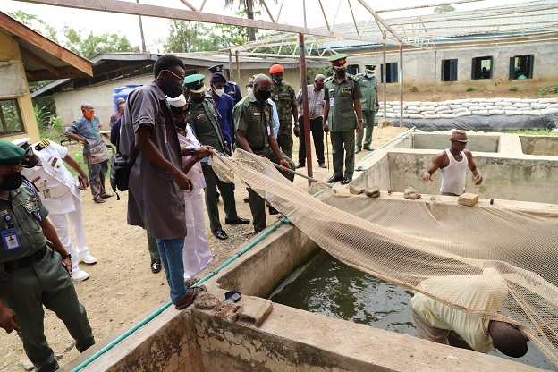
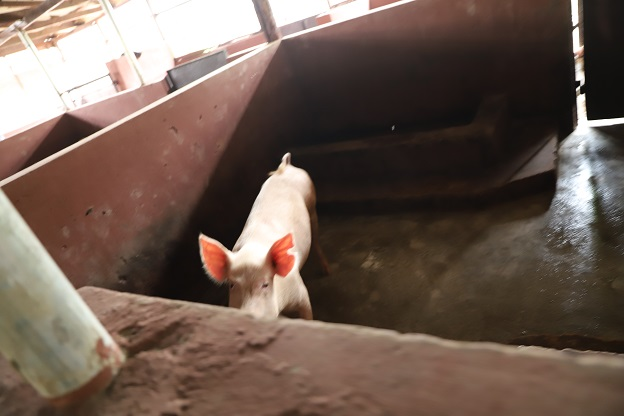
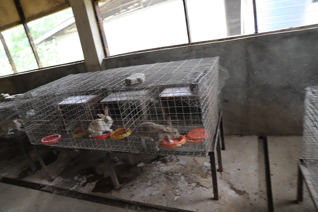
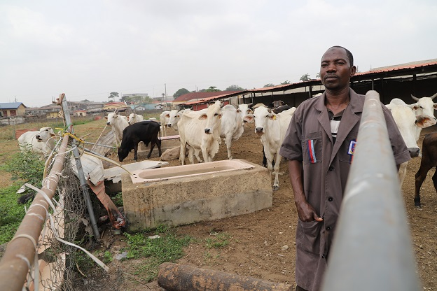

The Agric Wing is one of the wings (workshops) under Directorate of Training, Nigerian Armed Forces Resettlement Center. The wing is saddled with the responsibilities of training retiring Nigerian Armed Forces Personnel’s on Agriculture and how to set up a farm. The wing also engages interested organizations in empowerment program on farming system. Agric wing is headed by a Commanding Officer (CO), Head of Department (HOD) and other supporting staff both Military and civilian who serves as Instructors/supervisors as well as farm attendants.The Wing focuses on two major branches of Agriculture namely; Crop Production and Livestock Production.The wing engaged the trainees on various fields of crops and livestock basically both in theory and practical.
The statutory tasks and responsibilities of the Agric Wing include training of retiring personnel and conduction of empowerment programmes, also the production of farm produces including livestock such as poultry birds, pigs, snails, fish, rabbit etc, and crops such as vegetables, fruits, gardening crops. The wing also carries out sales of farm produce to NAFRC Community and beyond.
CROP PRODUCTION – Crops section comprises the following units:
- Green house. The Green house is a control environment where hybrids seeds are raised from nurseries to matured plants. Temperature, irrigation process and humidity etc are efficiently managed in a green house. The green house system encourage an all year round activity, farming can take place in both rainy and dry seasons. There are 2 kits of 8x24meters each in the center, presently; we have habernero pepper in the green house. The Pepper is being harvested every week as an IGR. Other crops that can be planted in the green house include water melon, sweet melon, cucumber etc.
- Open field. The open field is a unit that practices the non-intensive system of farming; plants are planted directly on the field. Before planting is done, the ground is tilled and beds are prepared and mixed thoroughly with manure before sowing takes place. Plants get water through the sprinkler irrigation system. Presently we have more of ugu and few scent leaves.
- Organic farm. The organic farm comprises of so many crops such as okro, green leaves (Amarantus), corn, water leaf, plantain, banana, pawpaw, cucumber etc. Before the seed of each crop is sowed, land preparation is being carried out. After the seeds are planted, water is applied on the beds early morning and in the evening.
- Commandant’s farm. This is another open field section where seeds are planted directly on the soil. Presently the land is being cleared. The only crop there is okro and nurseries has already been raised for the three vegetables (Ewedu, Amaranthus, Celosia). Manure will be spread on the entire field and mixed properly before transplanting will be done.
- Floriculture unit: This unit deals with the cultivation and propagation of flowers for both floristry and gardens. Flowers are cultivated for beautification and improvement of the environment. The unit makes sales of flowers to generate IGR and also plant flower in areas that needs beautification in the Center.
LIVESTOCK PRODUCTION - Livestock section comprises the following units:
- Poultry unit. The unit is comprise of both egg and meat production. Presently there are 1,454 layers in the layers pen. There are 2 brooding pens that is 2,000 birds capacity and 2 rearing pens that is 1,500 birds capacity. Eggs are being sold daily to generate monthly remittance.
- Cattle ranch. The cattle ranch takes care of the large ruminant, which is the bokoloji cow. Presently at the ranch there are 13Xbokoloji cows and 4xcalves, 3xbokoloji cows and 1xcalve are for the center while the rest are for individual Offrs. The ranch contains a partitioned grazing area, a crush section and a thresher.
- Goat unit. Goat unit contains the small ruminant animals such as the goats and sheep. In the goat unit there are 21 goats. 16 adults and 5 kids. The goats are being feed morning, afternoon and evening.
- Piggery unit. Pigs are omnivores animals and can consume a wide range of feed. Presently the piggery unit contains 62 pigs (adults and piglets). They are being feed, and washed frequently, this is to reduce the smell and improve the hygiene of the environment.
- Fishery unit. The fishery unit comprises of one earthen pen and 4 concrete pens. The earthen contains 243 fishes, while 2,000 fishes and 36 juveniles fishes are contained in big and small concrete ponds respectively. When the fishes have grown to market value they are being sold to generate IGR. After which fingerlings are brought for restocking.
- Snailery unit. The snailery unit consist of 10 pens in which the two species of snails we have in NAFRC are being shared in about 7 – 8 of the pens, while the remaining pens are where the eggs are being kept for incubation to occur. Presently we have 420 snails in the snailery unit. Archachatina marginata ovum and Archachatina marginata ovum.
- Rabbit/grass cutter unit. Cuniculture is the agricultural practice of breeding and raising domestic rabbits as livestock for their meat, fur or wool. This are small mammals belong to the leporidae family. Presently there are 31 rabbits in the unit. The urine and droppings of the rabbits are used as pesticides and manure in organic farms during the land preparation.
- Feed mill. This is where will mill all the feeds for the poultry birds, rabbit, and cattle. Presently the feed mill consists of a milling machine (1 ton capacity), pelting machine and a ware house where the feeds are stored before being distributed to the sections they are meant for.
The numbers of trainees graduated
The table below contains the figures available from 2014 till date.
| Serial | Years | Course 01 | Course 02 |
|---|---|---|---|
| 1 | 2014 | 123 | 121 |
| 2 | 2015 | 153 | 238 |
| 3 | 2016 | 188 | 209 |
| 4 | 2017 | 180 | 234 |
| 5 | 2018 | 198 | 368 |
| 6 | 2019 | 135 | 314 |
| 7 | 2020 | 150 | 234 |
| 8 | 2021 | 212 |
   